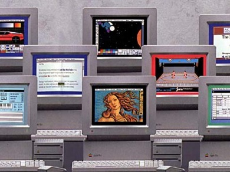

Getting Started

There are many programming software for the Apple IIGS, including one that is build into the ROM called Applesoft BASIC. However, Applesoft BASIC does not take advantage of the Apple IIGS specified features like Super Hires modes.
GSoft BASIC is the modern version of the Applesoft BASIC interpretor that support Apple IIGS features. Orca/Pascal supports Object Oriented Programming.
Complete Pascal (formally TML Pascal) is probably the best solution for development. It has a modern language, support Apple IIGS features, good desktop editor, much faster performance, and allowing programmer to do full screen graphic programminng without much technical knowledge.
Languages
Resources
We will be using Complete Pascal for all our programming examples.
Sometimes we will also put Orca/Pascal and GSoft BASIC sample codes on the sidebar for comparison purposes. In many GSoft BASIC programs, you will need to press CTRL-C to stop the program.
You can download the complete development systems which includes Complete Pascal, GSoft BASIC and all the Virtual GS sample codes here.
Orca/Pascal can be purchased here.
